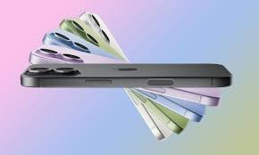
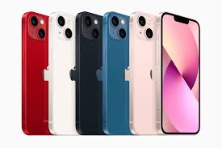

Những mẫu iPhone đáng mua nhất hiện nay

iPhone luôn là dòng smartphone được ưa chuộng nhờ thiết kế sang trọng, hiệu năng mạnh mẽ và hệ sinh thái ổn định. Tuy nhiên, không phải mẫu iPhone nào cũng phù hợp với tất cả người dùng. Trong bài viết này, chúng ta sẽ cùng điểm qua những mẫu iPhone đáng mua nhất hiện nay dựa trên hiệu năng, giá thành và nhu cầu sử dụng.
iPhone 13 – Lựa chọn cân bằng nhất
iPhone 13 được trang bị chip A15 Bionic mạnh mẽ, camera cải tiến cho chất lượng ảnh chụp tốt hơn trong điều kiện thiếu sáng và thời lượng pin được nâng cấp. Đây là mẫu iPhone phù hợp với đa số người dùng nhờ hiệu năng ổn định và mức giá hợp lý ở thời điểm hiện tại.

iPhone 14 Pro – Trải nghiệm cao cấp
- Màn hình OLED 120Hz với Dynamic Island.
- Camera 48MP cho khả năng chụp ảnh chi tiết hơn.
- Chip A16 Bionic hiệu năng mạnh mẽ.
- Phù hợp cho người dùng yêu cầu trải nghiệm cao cấp.
iPhone 11 – Giá rẻ, vẫn rất tốt
Dù đã ra mắt khá lâu, iPhone 11 vẫn là lựa chọn đáng cân nhắc trong phân khúc giá rẻ. Máy có hiệu năng ổn định, camera chụp ảnh tốt và thời gian sử dụng pin khá lâu, phù hợp với học sinh, sinh viên hoặc người dùng cơ bản.
Lời kết
Việc lựa chọn iPhone phù hợp phụ thuộc vào nhu cầu và ngân sách của mỗi người. Nếu bạn cần hiệu năng cao và trải nghiệm mới nhất, hãy chọn các dòng Pro. Nếu ưu tiên giá thành và sự ổn định, các mẫu iPhone đời cũ vẫn là lựa chọn rất đáng mua.